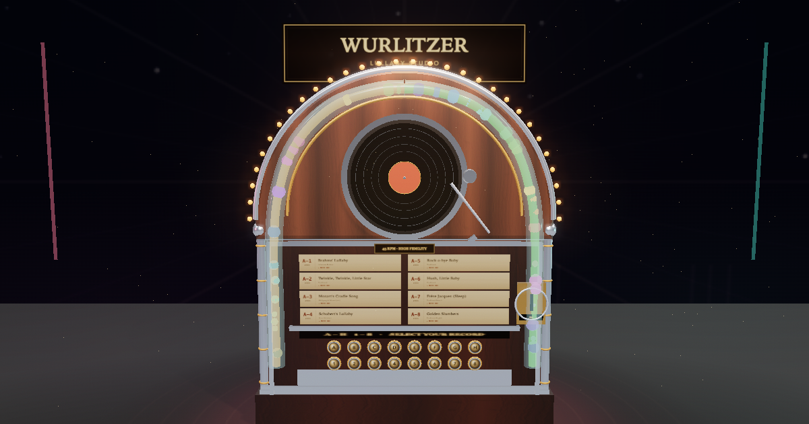

Open source · 2026
Est. 1946 · Dream Division
Vintage Wurlitzer
Lullaby Jukebox
3D Sleep Studio · Model 1015 Bubbler
- 50 synthesized lullabies
- 8 collection pages
- 4 public-domain 78s
- 4 themes · 3 text sizes
- Rain · Ocean · Crickets
- Sleep timer · EN / ไทย
somphol.github.io/vintage-wurlitzer-lullaby-jukebox · MIT · 73 automated checks